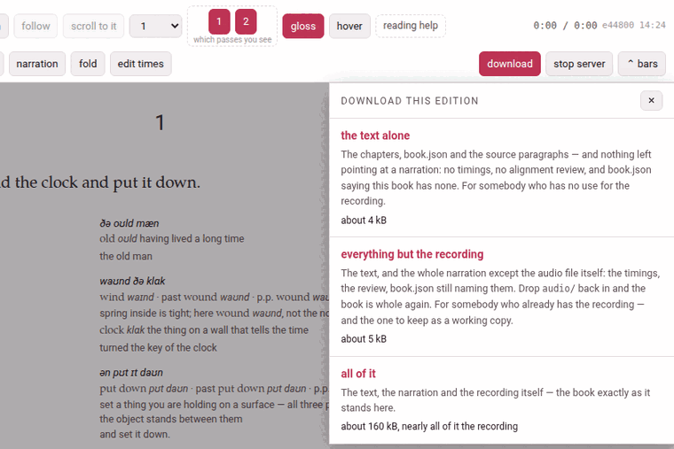

Taking a book away
download, in the reader’s header, gives the whole edition as one zip — a bundle — to keep, to work on in a text editor, or to give to somebody whose Parseh takes it back whole. It comes back in by the library’s ⇩ Bring a book back panel (The library).
1. What a bundle carries#
One folder named after the book’s slug, holding what the book is made of:
| Carried | |
|---|---|
book.json | the book’s facts |
every .tex at the top of the folder | main.tex and the chapters — but not frankdraft.tex, which a draft PDF build leaves behind |
NOTES.md | where an edition keeps the account of how it was made |
source/ | the original paragraphs the text is checked against |
markdown/ | the notes in the seams (Notes in the seam) |
reading.json | what you folded away, and the paragraphs you took charge of |
| the narration | as much of it as you ask for (below) |
and, at the root of the zip, parseh-bundle.json: a small manifest saying what kind of bundle it is, the book’s language and gloss language, its slug and — for a narrated book — its shape. It is what makes the zip something a toolbox can reason about instead of guess at; only its format is believed on its word, and everything else in it is checked against the files inside.
Never in a bundle: main.pdf, reader/, LaTeX’s .aux, .log and .toc, and the build keys by which a build knows the book has changed. They are made from the text, so they would carry the same text twice — and, carried back in stale, they would show text the chapters no longer say. The alignment’s review page, review.html, is not carried either: a bundle may carry the text the pages read and nothing that would run in them.
2. A book with no narration#
download is a plain link, and the zip is <slug>-book.zip. There is nothing to choose: all three shapes below would give the same bytes. Keep it in mind if the book is narrated later: brought back over it with replace, such a zip counts as everything but the recording and carries no timings, so the book’s timings.json and review are deleted (The library).
3. Three shapes, for a narrated book#
A narration is not one file, and not only in audio/: it is the recording, its transcript, timings.json, the alignment’s review, the fields of book.json that name them, and a % @par comment line above every subparagraph of every chapter, which is where the reader reads its times from. A recording is also large, and yours in a way the text is not. So in a narrated book download opens a small sheet, download this edition, with three choices:

| The sheet says | The zip holds | Take it when |
|---|---|---|
the text alone — <slug>-book-text.zip | the chapters, book.json and the source paragraphs, and nothing left pointing at a narration | you want the edition and have no use for the recording — to hand to somebody who will read it without one, or to keep the text by itself |
everything but the recording — <slug>-book-linked.zip | the text and the whole narration except the audio files: the timings, the review, book.json still naming them | the other person has the recording already, or you do: it leaves out nothing but audio/, so it is the one to keep as a working copy |
all of it — <slug>-book-full.zip | the same, and audio/ with it: the book exactly as it stands here | the recordings have to travel too |
The size of each is shown under it when the sheet opens — about 4 kB, about 5 kB, about 160 kB, nearly all of it the recording — worked out from exactly the files that shape’s zip will carry, counted as the zip will hold them. For all of it that is every recording the book has (a book recorded in nine parts carries all nine, and says …, nearly all of it the 9 recordings) and anything else in audio/: transcripts, and recordings you removed from the list, which stay in the folder. It is the one number a browser will not warn you about before you start a download of hundreds of megabytes. Where the recordings are not on this machine, it says so instead: the recording is not on this machine — so this one gives what the middle one gives.
Each choice is an ordinary link: the browser’s own download takes over, and the Working… indicator shows Preparing the download… while the server packs the zip. ×, Esc or a click outside close the sheet.
What the text alone takes out#
Item by item, because the question is always whether an alignment survives:
timings.json— every subparagraph’s start, end and confidence, and whether it was fixed by hand;review.jsonandreview-corrections.json— the subparagraphs the aligner was unsure of, and what you corrected in them;- the
audio,transcriptandnarrationsfields ofbook.json— set to null, which is what a book.json with no narration says; - the
% @parline above every subparagraph of every chapter. Leave those lines in, and the book would still light up in step with a recording the zip does not contain. Nothing else in a chapter changes: a whole-line comment is swallowed by TeX with its line, so the PDF and the reader set the same book with or without them; audio/.
Everything but the recording looks complete, and is not#
It carries the timings, the review, and a book.json still naming audio/clock-and-wind.mp3 — everything about the narration except the narration. Brought into a toolbox that has never had the recording, the book opens with no audio at all: no player, nothing lighting up as it is read, and no audio yet on its card. Nothing is broken and nothing is lost — the file is simply not there. To make it whole, put the audio/ folder back inside the book’s own folder (from an all of it bundle, or from wherever you keep it), with the names book.json gives, and press rebuild on the book’s card: the times were in timings.json and the chapters all along.
Bringing a bundle back over its own book is where a narration can be lost, and how much depends on the shape (The library has the whole table). Taken back with replace, the text alone leaves the recording, its transcript, the timings and the review where they are, and points book.json back at the recording. Everything but the recording keeps audio/, but its own timings.json and review take the place of the book’s: times fixed by hand since the download are lost. All of it puts its own audio/ in place of the book’s: a recording added since the download is deleted, not moved to the trash. So before a replace, take a fresh all of it download of the book as it stands — the download itself never changes the book.
4. Working on the files in a text editor#
A page edits one chunk at a time. A text editor does what a page cannot — find and replace across a whole chapter above all, which is how a name comes to be spelled the same way in fifteen paragraphs. Take the book away with download, unzip it, work on it, zip the folder up again with its parseh-bundle.json at the root, and bring it back with the library’s panel. The chapter format is in What a book is made of.
What is safe to replace is anything in a gloss: the meaning, the transliteration, a note. Nothing but a reader’s eye reads those, so a bad one is wrong and not broken. Renaming a character through a chapter’s English, settling on one spelling of a grammatical term: a minute’s work in an editor.
What is not safe:
- The text
- — the second argument of every chunk. A replace there breaks the check against
source/paras/unless you change the source the same way; a replace typed at the whole file cannot tell the text from the gloss. - The vocabulary line
- , which is LaTeX: a replace can leave a brace unbalanced, and that swallows the arguments after it rather than merely making the gloss wrong.
- A colour
- (
\Credis an argument, not a word), and the paragraph scaffolding (\parstart,\parnum, thefrankblocks, the% @parlines).
You need not check by hand: bringing the book back is the check. The panel refuses a chapter that does not parse (ch1.tex does not parse: …), and a text that no longer reproduces its source (the text no longer reproduces its own source paragraphs: MISMATCH chapter 1 paragraph 1 at char 4 of 109 …, quoting both texts either side of the difference) — and writes nothing until everything passes.
For the command line. The same bundle can be made, looked into and installed without a browser:
python3 lib/bundle.py pack books/<language>/<slug> --audio text|linked|fullpython3 lib/bundle.py inspect <slug>-book.zip # what is in it; writes nothingpython3 lib/bundle.py install <slug>-book.zip [--replace]FRANK_BOOK=books/<language>/<slug> python3 lib/verify_book.py # the text against its sourcepython3 lib/texwrite.py books/<language>/<slug>/ch1.tex # the chunks as the reader numbers themWithout --audio, a book is packed as linked.